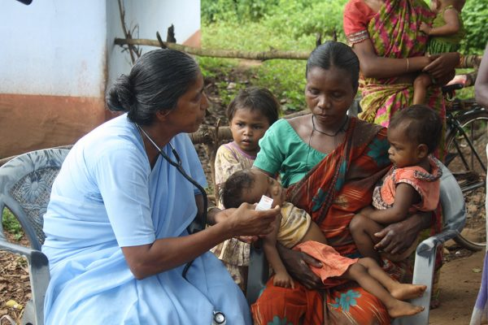
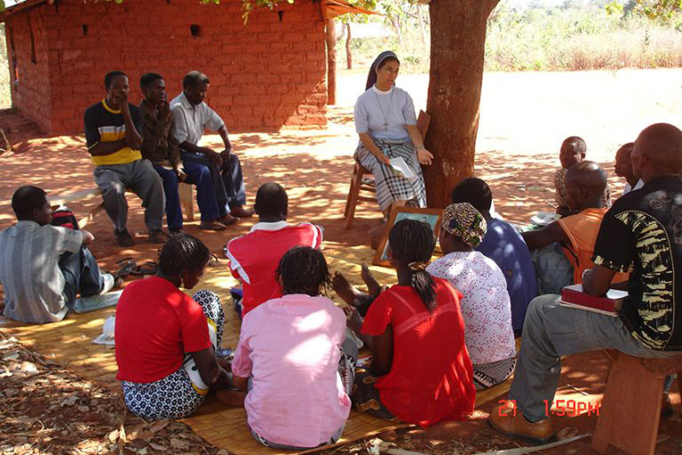
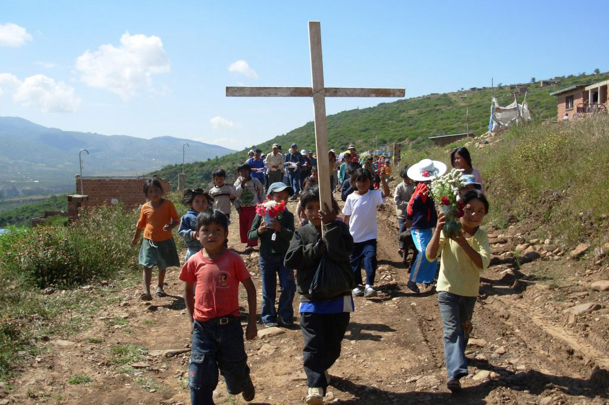
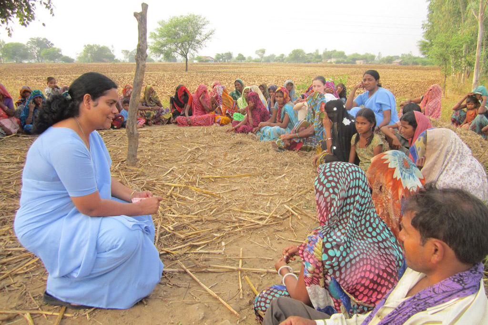
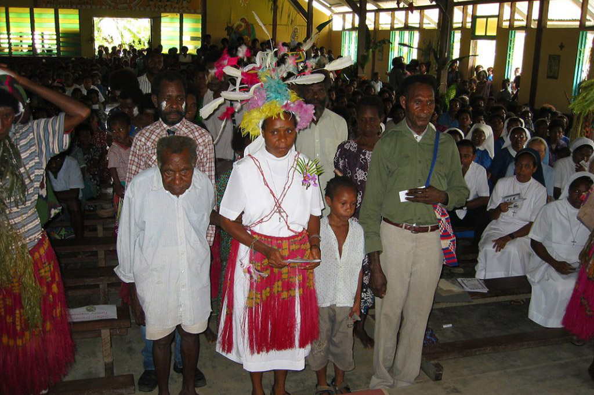
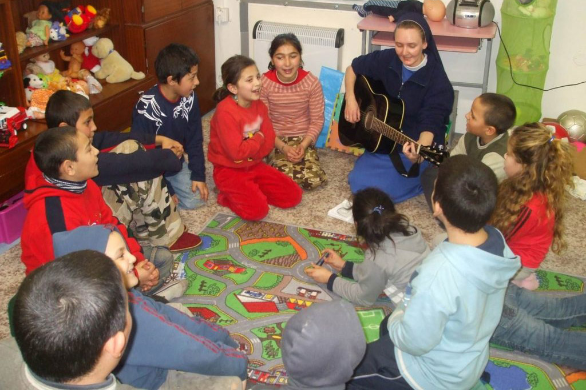

Em missão até os confins da terra
6 de Outubro de 2020
Sinto muita alegria em acompanhar a missão de minha congregação até “os confins da terra”. Essa é uma expressão forte que aparece nos Atos dos Apóstolos, quando Jesus ressuscitado se despede dos discípulos e se eleva ao céu: “Recebereis uma força, a do Espírito Santo, que descerá sobre vós, e sereis minhas testemunhas em Jerusalém, em toda a Judeia e a Samaria, e até os confins da terra” (At 1,8).
Compreendo que essa palavra de Jesus se realiza na Congregação das Missionárias Servas do Espírito Santo, pois é na força do Espírito de Deus que somos enviadas aos lugares mais desafiadores e às situações humanas mais difíceis, para testemunhar o amor de Deus.
Quando a Congregação foi fundada, nossas primeiras irmãs eram pessoas simples, mas de uma fé e coragem capaz de enfrentar qualquer obstáculo. Para se ter uma ideia, fomos fundadas em 1889, em Steyl, na Holanda, e, em 1895, foram enviadas as primeiras irmãs para a Argentina e, em 1897, para o Togo. Em 1899, já estávamos em Papua-Nova Guiné. Em seguida, fomos para os Estados Unidos (1901), Brasil (1902), China (1905) e Japão (1908). Em menos de 20 anos, alcançamos os cinco continentes.
Essa expansão da presença missionária continuou e, até hoje, procuramos estar nos locais onde a vida se encontra mais ameaçada. Atualmente estamos em 50 países, buscando responder aos apelos da realidade do povo ao qual servimos.
Em nossos encontros internacionais, temos o privilégio de ouvir a partilha de nossas irmãs de tantos lugares diferentes, com suas culturas e tradições. Viver a comunhão na diversidade é possível, e somos testemunhas disso. Em nossas comunidades, estamos cada vez mais misturadas: europeias, asiáticas, americanas e latino-americanas, africanas e até da Oceania.
Nosso compromisso com a vida assume diferentes expressões em cada país e em cada continente. De modo geral, desenvolvemos serviços em quatro áreas principais: educação, saúde, socioassistencial e pastoral.
Na educação, as irmãs trabalham, dependendo da realidade onde estão, em escolas próprias ou governamentais, da educação infantil ao ensino médio, e, em alguns locais, também em universidades. Na Ásia e na África, empenham-se muito na alfabetização de adultos e na educação das mulheres e meninas. Atendem também em creches, internatos, orfanatos, residências para estudantes e refeitórios. Na educação, ajudam a preparar pessoas para um futuro melhor.
Também estamos muito presentes na saúde hospitalar, maternidades, clínicas, centros de reabilitação, centros de saúde natural e complementar, atendimento domiciliar para enfermos e idosos, clínicas itinerantes, lares para idosos, cuidados com portadores do HIV/aids, hansenianos e outros. O cuidado com a saúde é uma forma de entrar em diálogo com as pessoas de todas as religiões e culturas e ser sinal do amor e misericórdia de Deus.
Na área assistencial, serviço social, defesa e promoção de direitos, há uma grande variedade de serviços que as irmãs prestam. Estes vão desde o cuidado pastoral até a luta pelos direitos humanos e combate à violência. Também há ações de justiça restaurativa, pastoral carcerária, contra o tráfico humano e em socorro às vítimas desse crime, trabalho com migrantes, refugiados, mulheres prostituídas, camponeses, povos indígenas, aborígenes e minorias étnicas. Além disso, existem outras frentes ligadas à justiça, paz e integridade da Criação, e na Vivat Internacional.
Sempre está presente o cuidado com crianças, especialmente as que estão em situação de maior vulnerabilidade, a promoção da mulher, projetos de desenvolvimento social e de geração de renda para excluídos e marginalizados.
Na pastoral, as irmãs no mundo inteiro atuam nas paróquias e comunidades de base, na catequese, apostolado bíblico, retiros de espiritualidade, formação de lideranças, pastoral da juventude, vocacional, apostolado familiar, meios de comunicação social, diálogo inter-religioso e outros.
Agora que você já tem uma ideia do que fazemos, convido a fazer uma breve excursão pelo mundo e ver onde são os confins da terra em que estamos presentes como missionárias servas do Espírito Santo.
África
No continente africano, temos comunidades nos seguintes países: Angola, Botsuana, Etiópia, Gana, Togo, Benin, Zâmbia, Moçambique, África do Sul e Sudão do Sul. Neste último, por causa da guerra e do assassinato de uma de nossas irmãs, temos apenas irmãs em projetos intercongregacionais.
Américas
Além do Brasil, nossas irmãs estão na Argentina, Paraguai, Bolívia, Chile, Equador, Cuba, México, Estados Unidos, Antígua e Barbuda, Jamaica, São Cristóvão e Névis.
Ásia
Estamos no Extremo Oriente: Índia, Indonésia, Timor Leste, Japão, Coreia, Filipinas e Taiwan. Atualmente, na Ásia, temos o maior número de vocações, embora os cristãos sejam minoria.
Oceania
Papua-Nova Guiné foi uma das primeiras missões das irmãs, mas estamos também na Austrália e em Fidji.
Europa
Além da Holanda, onde fica nossa Casa-Mãe, em Steyl, e várias outras comunidades, estamos também na Alemanha, Áustria, Inglaterra, Irlanda, Itália, Romênia, Moldávia, Suíça, Polônia, Rússia, Eslováquia, República Checa, Hungria, Espanha, Portugal, Ucrânia e Grécia, que é a última fundação e onde as irmãs se dedicam ao trabalho com migrantes e refugiados.
